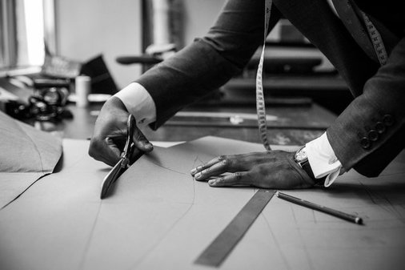

Home
"Tailoring: History of fashion through the ages" will be held for the first time in Iceland. See the timetable below.

Saturday, December 17th 2016:
18:00: Introduction. The bar will be catoring to the group while some of the most famous taylorers and fashion icons of the industry talk about some of their ideas about the history of fashion as well as take questions from the audience.
19:00: The Runway. Everybody will take their seats and enjoy a diverse runway performance, showing the different fasion trends through the ages.
19:30: The lounge will be open for conversations with fine jazz playing in the background. This will give people a chance to create contacts and get to know the designers and models on a more personal level.
21:00: The Runway II. The designers this year will take a specific era to showcase the fashion from that time.
21:30: Fashion Documentary. The highlight of the event will take place in the biggest hall. Paloero Zatnya the famous designer and historian will premiere his documentary "The Tie and Jacket, and how It transformed the world" which is said to be one of his best works yet.
23:00: Drinks and late night dinner. We will transition to the dining room where a team of world class chefs will prepare an amazing dinner and the band will play a variety of melodies.
00:00 - 01:00: See you next year. The hosts will thank the croud and when everybody has finished their dinner, the night will come to an end.
Location
The event will take place in the convert hall "Harpa". View map for further details.
Reservation
To make a reservation please fill out the form belove. The payment will take place at the concert Hall. You will be asked for your name that you filled in.
For a chance to win an Armani suit please answer the following question with either "true" or "false" and your name will be added to a list of possible winners.
Question: True or false. The first fashion magazine was published in Germany in 1586?